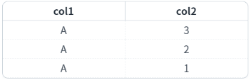
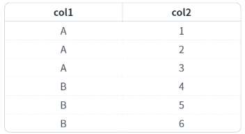
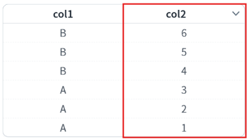
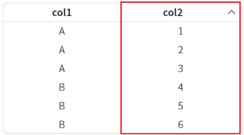
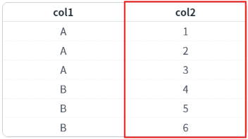
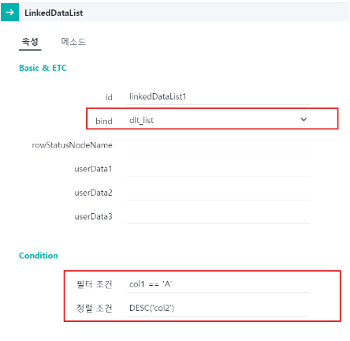

[LinkedDataList] 기존의 DataList에 필터와 정렬 조건 사용하기
1개요
기존의 DataList에 필터와 정렬 조건을 사용할 때는 LinkedDataList 또는 관련 메소드를 사용할 수 있습니다. LinkedDataList는 기존에 존재하는 DataList에 'filter'나 'sort' 조건을 걸어서 새로운 DataList로 사용하는 데이터 객체 입니다.
2구현된 기능
LinkedDataList 사용하여 DataList 필터와 정렬하기
메소드로 DataList 데이터 정렬하기
3예제 테스트 방법
3.1LinkedDataList 사용하여 DataList 필터와 정렬하기
1
STEP 1: 기존의 DataList에 할당된 데이터를 확인합니다.
예제 영역 '기존 DataList'에서 확인합니다.Image 1.브라우저(Chrome) 실행 예시

2
STEP 2: LinkedDataList의 데이터를 확인합니다.
예제 영역 'LinkedDataList [filter: col1 == 'A', sort: DESC('col2')]'에서 확인합니다.
'col1'의 값이 'A'인 행만 표시되고, 'col2'의 값이 내림차순으로 정렬되어 나타납니다.Image 2.브라우저(Chrome) 실행 예시

3.2메소드로 DataList 데이터 정렬하기
1
STEP 1: 초기 상태를 확인합니다.
예제 영역 '기존 DataList'에서 확인합니다.
DataList에 할당된 데이터를 확인합니다.Image 3.브라우저(Chrome) 실행 예시

2
STEP 2: '메소드로 'col2' 컬럼에 sort 내림차순 적용하기' 버튼을 클릭합니다.
'col2'의 데이터가 내림차순으로 정렬됩니다.
Image 4.브라우저(Chrome) 실행 예시

3
STEP 3: '메소드로 'col2' 컬럼에 sort 오름차순 적용하기' 버튼을 클릭합니다.
'col2'의 데이터가 오름차순으로 정렬됩니다.
Image 5.브라우저(Chrome) 실행 예시

4
STEP 4: '메소드로 'col2' 컬럼에 적용된 sort 취소하기' 버튼을 클릭합니다.
'col2'의 데이터 정렬이 해제됩니다.
Image 6.브라우저(Chrome) 실행 예시

4구현 예시
4.1LinkedDataList 사용하여 DataList 필터와 정렬하기
1
LinkedDataList의 속성을 정의합니다.
[필수] bind = "참조할 dataList의 ID"
[선택] 필터 조건, 정렬 조건
작성 예시 1) 컬럼 값 필터링과 내림차순 정렬
필터 조건 : col1 == 'A'
정렬 조건 : DESC('col2')
작성 예시 2) 컬럼 값 필터링과 오름차순 정렬
필터 조건 : col1 == 'B'
정렬 조건 : ASC('col2')
Image 7.웹스퀘어 스튜디오의 데이터컬렉션 예시

Example 1.Source
<w2:linkedDataList bind="dlt_list" id="linkedDataList1"> <w2:condition type="filter"><![CDATA[col1 == 'A']]></w2:condition> <w2:condition type="sort"><![CDATA[DESC('col2')]]></w2:condition> </w2:linkedDataList>
4.2메소드로 DataList 데이터 정렬하기
DataList의 'sort' 메소드를 사용하여 스크립트를 작성합니다. 세부 설정은 아래의 스크립트 예시에 작성되어 있습니다.
Example 2.Script
// sort(ColumnId, sortType) // sortType - 정렬 옵션 (0: 오름차순, 1: 내림차순, 2: 정렬 취소) // DataList 'dlt_list'의 'col2' 컬럼의 값을 내림차순 정렬합니다. dlt_list.sort('col2', 1);
5주요 API
sort( )